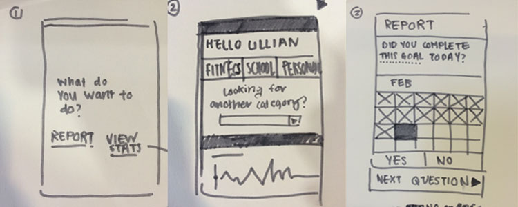
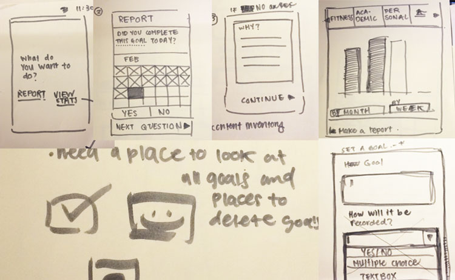

Paper prototypes
This the first paper prototype rendition. We began sketching by doing a speed sketch for five minutes and then some user testing for another five minutes. My partner was able to understand that there were two options branching from the home screen, one for reporting and one for viewing stats. SShe commented on how having all stats on one page could potentially become cluttered.

Testing for protoype 2 went smoothly. I added a few more screens and had my partner navigate through the application beginning from screen one. There were a few things that she mentioned that were important. She was looking for a place where she could see all of the goals in one place and I realized that it was something that was quite important to see as students are trying to balance their personal and academic work and should be able to compare their goals for both side by side.
She also mentioned that while she liked hte red x theory, she didn't like the red x itself, which caused her to think of not accomplishing a goal. These observations provided many new insights that helped me while creating my wireframes.